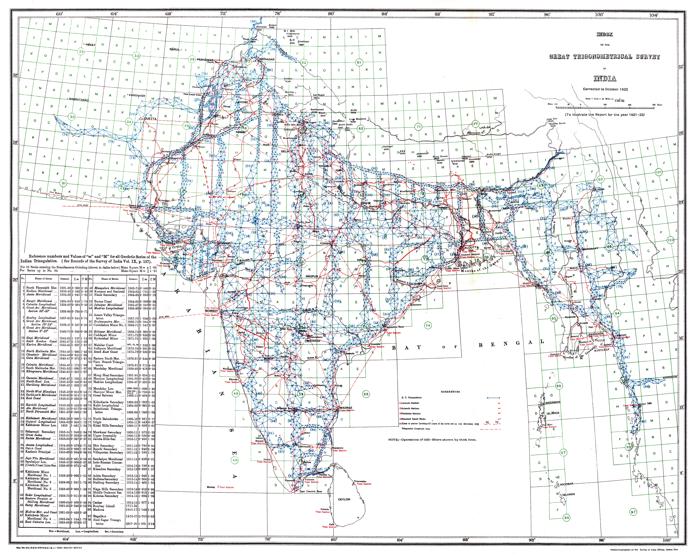

Click to enlargeAn institutional index
The matching public-domain scan identifies the source as the Report of the Survey of India for 1921–22. The map is therefore not a stand-alone popular atlas plate but an administrative diagram embedded in the Survey’s own annual reporting.
The network behind the map
The one-degree grid and survey symbols organise the country by the operations through which positions were established. Triangulation chains and other geodetic work appear as an infrastructure of measurement laid across the subcontinent.
From Lambton to institution
Placed at the end of the Survey Turn, the index functions as a retrospective epilogue rather than the next chronological step after the 1831 Walker map. The experimental and hazardous early triangulations have become, by 1922, a mature bureaucratic system capable of diagramming its own coverage.
The gaze
This is not merely India mapped; it is the machinery of mapping made visible. Individual surveyors recede behind the Survey of India, while the country is rendered as a lattice of operations, series and calculated positions.